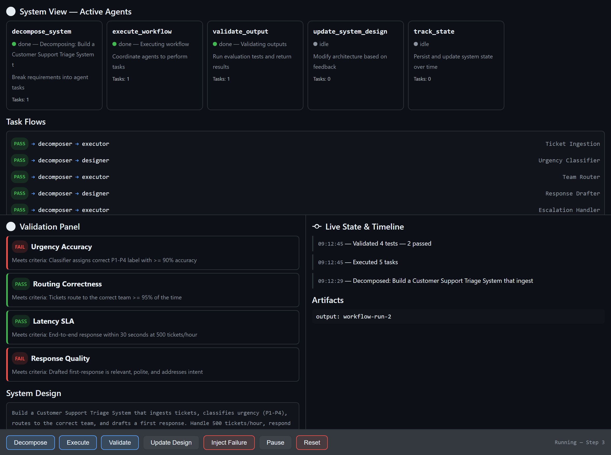

What if your development environment didn't just help you write code — but helped you observe, steer, and evolve a living system while it runs? That's the shift GitHub Copilot Canvas represents. Canvas redefines how developers interact with agent-driven software: not by building traditional user interfaces, but by creating interactive environments where humans and AI co-create, test, and iterate in real time.
This post walks through a real Canvas extension we built — a Multi-Agent Dev Canvas — that demonstrates how Canvas becomes a runtime observability and control plane for an agent-driven system. We'll cover why Canvas exists, how it differs from traditional UI development, and how you can use it to accelerate the design-test-evolve loop for any multi-agent application.
The first instinct many developers have when they see Canvas is to treat it like a UI framework — a place to build dashboards, boards, or user-facing applications. That's not what Canvas is for.
Here's the distinction that matters:
Canvas solves problems your final UI should never try to solve in a visible way. It's the observability layer, the control plane, the validation surface — all the things you need during development that disappear before production. Think of it this way: you wouldn't ship your debugger to users, but you absolutely need it while building.
To demonstrate Canvas as a development runtime, we built a Multi-Agent Dev Canvas for the Foundry Game Master project — an AI-powered tabletop RPG game master built on Azure AI Agent Service. The canvas treats the entire multi-agent system as a living, observable environment.

The Multi-Agent Dev Canvas: a runtime observability and control plane where developers and AI agents collaborate to design, test, and evolve an agent-driven system in real time.
The canvas provides four integrated panels:
Five specialised agents are displayed as live cards with real-time status indicators. Each card shows the agent's name, responsibility, current status (idle, running, done, or error), task count, and last action taken. When an agent is active, its card pulses blue. When it fails, it glows red. You see the system breathe.
decompose_system — Breaks requirements into agent tasksexecute_workflow — Coordinates agents to perform tasksvalidate_output — Runs evaluation tests and returns structured resultsupdate_system_design — Modifies architecture based on feedbacktrack_state — Persists and updates system state over timeBelow the agents, a flow graph visualises how tasks route between agents. When you decompose a system requirement like "Build an AI-powered code review agent," the canvas shows five components (pr-ingestion, code-analysis, feedback-generator, learning-loop, notification-service) flowing from the decomposer to the executor and designer agents. Each flow carries a status badge — pending, pass, or fail.
The validation panel displays structured test results with pass/fail badges and reasoning. When you run validation, each test case evaluates against specific criteria:
This isn't a test runner you invoke separately — it's a validation surface embedded in the development loop. You see failures the moment they happen, in context, alongside the agents and flows that produced them.
The right panel tracks every state change with timestamps. Decomposition events, workflow executions, validation runs, failure injections — all appear chronologically. This is the system's memory, visible to both the human developer and the AI agents working alongside them.
What makes Canvas a runtime rather than a display layer is that the agent can act through it. The canvas exposes seven agent-callable actions:
| Action | What It Does |
|---|---|
decompose_system | Accept requirements and components, generate task flows, update the system design |
execute_workflow | Run pending tasks through the agent pipeline, produce artifacts |
validate_output | Evaluate test cases against criteria, return structured pass/fail with reasoning |
update_system_design | Modify the architecture description, constraints, or component list live |
track_state | Read the full system state — agents, flows, validations, history, artifacts |
inject_failure | Force an agent into an error state to test system adaptation |
pause_resume | Toggle execution on and off |
The human developer can click Decompose, Execute, or Validate directly in the canvas. The AI agent can invoke the same actions programmatically. Both parties operate on the same surface, the same state, the same system — that's what makes Canvas collaborative in a way traditional tooling is not.
It helps to position Canvas against tools developers already know:
Canvas is collaborative in the Figma sense — it's a shared space, it's visual, multiple participants interact with the same surface. But unlike Figma, the participants include AI agents, and the surface isn't a mockup — it's a live system.
A Canvas extension is a standard GitHub Copilot CLI extension — a single extension.mjs file that speaks JSON-RPC over stdio. The key components:
Each canvas instance maintains its own system state: agents, task flows, validations, a state history timeline, artifacts, and the current system design. State is held in-memory per instance and pushed to the iframe via Server-Sent Events whenever it changes.
function createInitialState() {
return {
agents: [
{ id: "decomposer", name: "decompose_system",
status: "idle", responsibility: "Break requirements into agent tasks" },
{ id: "executor", name: "execute_workflow",
status: "idle", responsibility: "Coordinate agents to perform tasks" },
// ... three more agents
],
taskFlows: [],
validations: [],
stateHistory: [],
artifacts: [],
systemDesign: { description: "", constraints: [], components: [] },
execution: { paused: false, stepCount: 0 },
};
}
The canvas runs a loopback HTTP server per instance. The iframe connects to an /events endpoint and receives state updates as they happen — no polling, no websocket complexity.
if (req.url === "/events") {
res.writeHead(200, {
"Content-Type": "text/event-stream",
"Cache-Control": "no-cache"
});
clients.add(res);
// Push current state immediately on connect
res.write(`data: ${JSON.stringify(getState(instanceId))}\n\n`);
}
Every action is available through two paths. The human clicks a button in the iframe, which POSTs to the local server. The AI agent calls invoke_canvas_action through the SDK. Both paths mutate the same state and trigger the same SSE broadcast. Neither is privileged over the other.
The canvas registers with the Copilot SDK using createCanvas, declaring its identity, description, and all agent-callable actions with JSON Schema validation on inputs:
createCanvas({
id: "multi-agent-dev",
displayName: "Multi-Agent Dev Canvas",
description: "Runtime observability and control plane for multi-agent development",
actions: [
{
name: "decompose_system",
description: "Break requirements into agent tasks",
inputSchema: {
type: "object",
properties: {
requirements: { type: "string" },
components: { type: "array", items: { type: "string" } }
},
required: ["requirements"]
},
handler: async (ctx) => { /* ... */ },
},
// ... six more actions
],
open: async (ctx) => { /* start server, return URL */ },
onClose: async (ctx) => { /* clean up */ },
});
The Multi-Agent Dev Canvas supports four development scenarios that would be impossible with traditional tooling:
Tell the agent "Build an AI-powered code review system." Watch it decompose the requirement into five components, route tasks to specialist agents, execute the workflow, and validate the outputs — all visible in real time. Iterate by modifying constraints or components and re-running.
See how agents hand off work to each other. The flow graph shows which agent produced what, which tasks are pending, and where bottlenecks form. This is the kind of observability you need when debugging multi-agent orchestration but would never expose in a production UI.
Use inject_failure to force an agent into an error state. Watch how the system responds. Does the orchestrator recover? Do downstream tasks fail gracefully? This chaos-engineering approach — applied during development, visible in real time — catches integration failures before they reach production.
Define test criteria, run validation, see which tests fail, update the system design, re-run. The validation panel isn't a separate CI pipeline — it's embedded in the development surface, creating a continuous feedback loop between design decisions and their measurable outcomes.
To create a Canvas extension in your own project:
extensions_manage({ operation: "guide" }) in GitHub Copilot CLI to get the canonical documentation paths.extensions_manage({ operation: "scaffold", kind: "canvas", name: "my-canvas", location: "project" }) to generate the boilerplate.extension.mjs with your canvas logic: state model, actions, renderer HTML, and SSE updates.extensions_reload to activate your changes.open_canvas, invoke actions with invoke_canvas_action, and iterate.
The canvas extension lives in .github/extensions/your-canvas/extension.mjs for project-scoped extensions, or in your user extensions directory for personal use. No package.json needed — the @github/copilot-sdk import is auto-resolved.
extension.mjs file, no dependencies, loopback HTTP server with SSE — the infrastructure gets out of the way so you can focus on the system you're building.Canvas redefines software development by shifting from writing static code to orchestrating living systems. Developers and AI co-create, observe, and evolve solutions in real time. Instead of building UIs for users, we build interactive environments for agents — turning debugging, testing, and execution into a continuous, visual feedback loop that accelerates innovation and brings ideas to production faster than ever.
The Multi-Agent Dev Canvas we built here is one example. The pattern applies anywhere you're building agent-driven systems: AI orchestration, workflow automation, data pipelines, autonomous services. Anywhere you need to see, steer, and validate a complex system as it runs — that's where Canvas belongs.